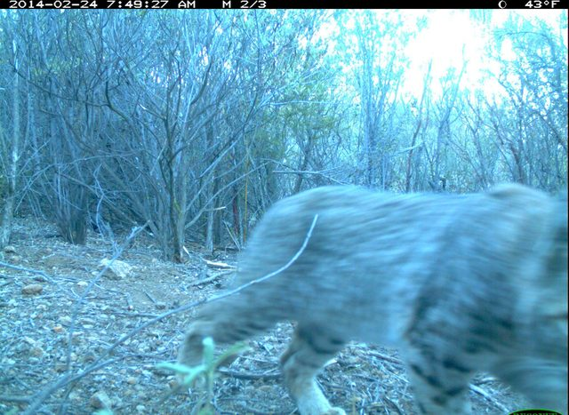
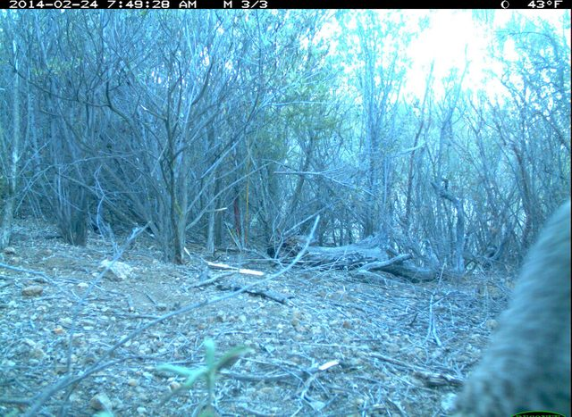

25-minute lecture bridge + guided lab
For one frame, a model provides \(\widehat p(\text{animal present})\).
The analyst still chooses:
We will evaluate the probability model before pretending the action is settled.
The first quantity describes class balance; it is not a fitted, deployable rule. A headline AI score without simple reference points has no scale.
| Question | Relevant unit |
|---|---|
| What is scored and counted in accuracy? | frame |
| Which observations are dependent? | trigger sequence |
| What defines the protected split and new-location target? | camera location |
Today we pool accuracy over frames, so cameras are weighted by their frame counts. The split follows the claim, not the convenience of a random-number generator.
Frame 1 · 7:49:26

Frame 2 · 7:49:27

Frame 3 · 7:49:28
Same camera, same trigger sequence, nearly the same background. A random frame split can put this shared scene on both sides of the evaluation.
Two email-routing systems see the same 100 messages:
| AI correct | AI wrong | |
|---|---|---|
| Baseline correct | 68 | 9 |
| Baseline wrong | 15 | 8 |
The four cells are mutually exclusive and sum to 100. The two accuracies are descriptive summaries; the discordant cells, 9 and 15, show where the systems differ on the same messages. Formal comparison waits until Week 5.
A locked rule selects one reproducibly random error and one highest-confidence error per system before any case is displayed.
An email-routing study locks logistic regression and obtains held-out accuracy \(0.78\). After seeing it, an AI assistant proposes a random forest, which scores \(0.84\) on the same holdout.
Improvement is not part of the rubric.
By minute 5: the bias–variance scaffold attempted before its reveal.
By minute 15: six random frames, one full sequence, and class balance inspected.
By minute 28: baseline/AI performance and the four-cell paired table completed on held-out cameras.
By minute 42: four reproducibly selected errors displayed and interpreted.
Before leaving: AI-claim audit and four-sentence handoff saved.
You may reuse:
You independently analyze new cameras, select errors reproducibly, and audit an AI explanation of split leakage.
The final five points require one ambitious AI-assisted baseline extension. It remains exploratory even if its held-out score is higher.